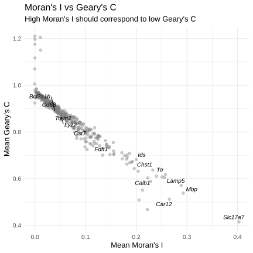

Spatial autocorrelation analyses quantify whether nearby cells have more similar gene expression than expected by chance (positive autocorrelation; “spatial clustering”), or instead tend to differ (negative autocorrelation; “spatial dispersion”). The definition of “nearby” is therefore a modelling choice that must be made explicit, and it is encoded in a spatial weights/neighbor graph.
We build two types of spatial networks per slide, because they address different biological questions:
Delaunay triangulation: connects immediate spatial neighbours; used for cell-type co-localisation enrichment (who tends to sit next to whom), which is naturally framed as adjacency.
k-nearest neighbours (k=15): connects each cell to its 15 closest neighbours; used for Moran’s I and Geary’s C, which require a weights structure over neighbors and are easier to compare across regions when neighborhood size is fixed.
For Moran’s I / Geary’s C, we use row-standardized weights (style = "W" in spdep::nb2listw), which rescales each cell’s outgoing neighbour weights to sum to 1. This reduces sensitivity to differences in effective connectivity (for example, edge cells versus interior cells), because each cell contributes comparably to the global statistic after normalization.
Finally, kNN neighbourhoods are generally directed/asymmetric (cell A can include cell B among its 15 nearest neighbours even if cell B does not include cell A), so the implied weights matrix is not guaranteed symmetric. Because classical inference for Moran’s I can be sensitive to the neighbor graph (and symmetry is an assumption in common derivations), we emphasize Moran’s I and Geary’s C primarily as effect sizes for ranking genes by spatial structure, and interpret analytical p-values cautiously.
Code
giotto1 <-createSpatialNetwork(giotto1, method ="Delaunay", name ="delaunay")giotto1 <-createSpatialNetwork(giotto1, method ="kNN", k =15, name ="knn15")giotto2 <-createSpatialNetwork(giotto2, method ="Delaunay", name ="delaunay")giotto2 <-createSpatialNetwork(giotto2, method ="kNN", k =15, name ="knn15")qs2::qs_save(giotto1, "spatial/giotto1.qs2")qs2::qs_save(giotto2, "spatial/giotto2.qs2")
Global Moran’s I summarizes whether a gene’s expression is spatially clustered across the full tissue section at the scale defined by the kNN(15) graph.
Intuitively, Moran’s I increases when cells tend to resemble their neighbours (e.g., high-expression cells near other high-expression cells), producing broad spatial domains, while values near 0 indicate little spatial structure at this scale. Negative values indicate local alternation (neighbours tending to differ), which is less common in many biological expression maps but can occur for sharply alternating patterns.
Here, Moran’s I is used mainly as a ranking statistic: genes with higher Moran’s I show stronger spatial patterning and are more likely to reflect anatomy, cell-type organization, or spatially restricted biological processes.
Moran’s I measures whether nearby cells have similar expression values (I > 0: spatial clustering; I ≈ 0: spatial randomness; I < 0: spatial dispersion).
Interpretation note: The analytical p-values from spdep::moran.test rely on assumptions that can be sensitive to the neighbour graph and other factors. In particular, common derivations assume a symmetric weights matrix, which is not guaranteed for directed kNN graphs, and spdep explicitly recommends checking results using permutation-based alternatives (e.g., moran.mc) when inference is critical. For this reason, we interpret Moran’s I primarily as an effect size for ranking genes by spatial structure, and treat p-values as secondary.
Global Moran’s I was computed for each gene in the Xenium panel using a k=15 nearest-neighbour spatial weight matrix with row-standardized weights.
Nearly all genes exhibited positive Moran’s I (range: −0.0003 to 0.56; Il1r2 was the sole gene with a marginally negative value, effectively zero), consistent with the spatially organized architecture of the mouse brain. The distribution was right-skewed (median I = 0.071, mean I = 0.100), with 64.5% of genes showing I >= 0.05 and 12.1% showing I >= 0.20. The most spatially structured genes were regional cell-type markers: Slc17a7 (I = 0.56, excitatory neurons), Ccdc153 (I = 0.51, ependymal cells), Car12 (I = 0.46, oligodendrocyte lineage), Tmem212 (I = 0.46, ciliated cells), and Mbp (I = 0.44, myelin/white matter). These reflect normal brain laminar architecture rather than disease processes. At the opposite extreme, genes expressed by rare, scattered populations showed near-zero Moran’s I (Ly6g, Chil3, Apoc2, Il1r2), indicating spatially random expression.
Spatial autocorrelation estimates were highly reproducible between slides (Pearson r = 0.973; Spearman rho = 0.971).
Moran’s I vs distance correlation
Moran’s I alone does not identify what drives spatial structure. A gene can have high Moran’s I simply because it marks anatomy or cell-type domains, even if it is unrelated to plaques.
To separate these effects, we combine Moran’s I with an independent plaque-association measure: the Spearman correlation between gene expression and cell-to-plaque distance (with the sign flipped so that positive values indicate higher expression nearer plaques).
High Moran’s I + high rho_flip: spatially clustered AND plaque-associated (e.g., DAM genes)
High Moran’s I + low rho_flip: spatially structured but NOT due to plaques (brain architecture)
Low Moran’s I + high rho_flip: plaque-associated but not broadly spatial (focal plaque response)
Low Moran’s I + low rho_flip: neither spatial nor plaque-associated
To distinguish anatomy-driven from plaque-driven spatial gene expression, we combined Moran’s I with the Spearman correlation between gene expression and distance to the nearest plaque (sign-flipped so positive values indicate enrichment near plaques). Genes partitioned into four quadrants. Of 459 tested genes, 86 fell in the “spatial + plaque” quadrant (above-median Moran’s I and positive rho_flip), 144 in “spatial only,” 107 in “plaque only,” and 122 in “neither.”
The labeled genes separate into two clear groups. First, the strongest global spatial genes were largely plaque-distant/anatomy-linked: Ccdc153 (I=0.505, rho_flip=-0.088), Car12 (0.464, -0.126), Tmem212 (0.463, -0.078), Calb1 (0.373, -0.130), Chst1 (0.333, -0.126), Ids (0.293, -0.158), and Fdft1 (0.228, -0.138), consistent with broad anatomical domains rather than plaque-local biology. Second, canonical DAM genes were strongly plaque-associated but only modestly spatial by Moran’s I: Cst7 (0.161, 0.295), Lyz2 (0.109, 0.220), Trem2 (0.095, 0.216), Bcl2a1b (0.086, 0.208), and Cd68 (0.080, 0.198), consistent with focal plaque-proximal microglial activation. Mbp was a notable exception: both highly spatial (I = 0.44) and modestly plaque-associated (rho_flip = 0.12), likely because parenchymal plaques form preferentially in myelinated regions.
Treatment-stratified Moran’s I
Next we tested if spatial autocorrelation differ between Adu- and IgG-treated tissue. For that, we subset each slide by treatment and recomputed Moran’s I.
Most genes clustered near the identity line \((I_{\mathrm{Adu}} \approx I_{\mathrm{IgG}})\), indicating that overall transcriptome-wide spatial organization is largely preserved between treatment groups.
To detect treatment-sensitive spatial changes, we ranked genes by \((|I_{\mathrm{Adu}} - I_{\mathrm{IgG}}|)\) and selected the top 1% most off-diagonal genes. Five genes met this threshold: Car12, Fcer1a, Nts, Tac1, and Tdo2.Together, these findings indicate that aducanumab is not associated with a global reconfiguration of tissue-scale transcriptomic architecture, but rather with selective, gene-specific changes in spatial coherence. Because Moran’s I quantifies global spatial dependence, these differences reflect altered spatial patterning rather than mean-expression shifts alone.
Geary’s C — complementary spatial measure
Moran’s I and Geary’s C are both global measures of spatial autocorrelation computed on the same neighbor graph, but they emphasize different aspects of spatial structure. Moran’s I is covariance/correlation-like and is most sensitive to broad spatial domains, whereas Geary’s C is based on squared neighbour-to-neighbour differences and is therefore more sensitive to local heterogeneity and sharp boundaries.
For Geary’s C, C ~1 indicates no spatial autocorrelation, C < 1 indicates positive autocorrelation (neighbours are similar), and C > 1 indicates negative autocorrelation (neighbours are dissimilar).
As a result, genes with high Moran’s I often tend to have low Geary’s C, so plotting Moran vs Geary provides a simple consistency check and can highlight genes where “spatial structure” is dominated by local discontinuities.
geary_mean <-read_csv("spatial/geary_mean.csv")geary_vs_moran <- geary_mean |>inner_join(moran_mean, by ="gene")ggplot(geary_vs_moran, aes(x = mean_moran, y = mean_geary)) +geom_point(alpha =0.4, colour ="grey50") +geom_text_repel(data = geary_vs_moran |>filter(gene %in% label_set$gene),aes(label = gene),size =3.5, fontface ="italic" ) +labs(title ="Moran's I vs Geary's C",subtitle ="High Moran's I should correspond to low Geary's C",x ="Mean Moran's I", y ="Mean Geary's C" ) +theme_minimal(base_size =13)

To validate the Moran’s I findings, we computed Geary’s C for all genes using the same kNN(15) spatial weight matrix. Geary’s C is based on squared neighbour-to-neighbour differences and is therefore more sensitive to local heterogeneity than Moran’s I, which captures global covariance structure. As expected, the two statistics showed a strong inverse relationship: genes with high Moran’s I exhibited low Geary’s C (positive autocorrelation confirmed by both measures), and vice versa. The tight inverse correlation between the two statistics indicates that the spatial autocorrelation rankings are robust and not artefacts of the specific test statistic used.